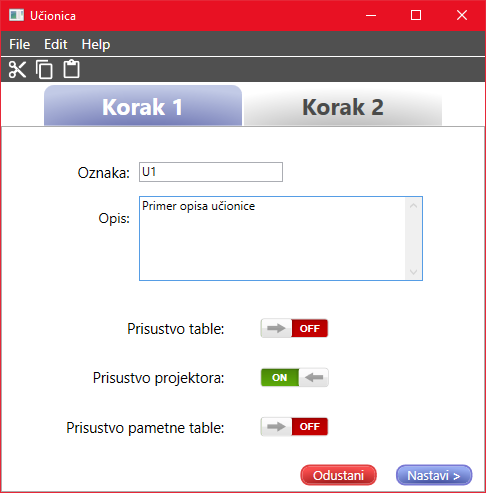
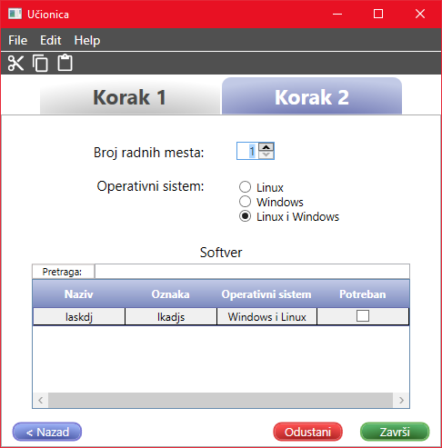

Dodavanje/izmena učionica
Da biste uneli novu učionicu potrebno je popuniti sva polja.
Za prelazak izmedju tabova se koriste dugmići Nastavi, za koje je prečica Ctrl+N i Nazad,
sa prečicom Ctrl+B.

Sadržaj polja za oznaku mora da bude jedinstven, odnosno dve učionice ne mogu imati istu oznaku.
U polju za opis se unosi opis učionice.
Prisustvo table označava da li je prisutna tabla u učionici. Ukoliko je ona prisutna,
vrednost treba da bude ON, a ukoliko nije, treba da bude OFF.
Prisustvo projektora označava da li je projektor prisutan u učionici. Ukoliko je on prisutan,
vrednost treba da bude ON, a ukoliko nije, treba da bude OFF.
Prisustvo pametne table označava da li je pametna tabla prisutna u učionici. Ukoliko je
ona prisutna, vrednost treba da bude ON, a ukoliko nije, treba da bude OFF.

Broj radnih mesta predstavlja broj mesta u učionici. Ono može da se podešava uz
pomoc strelica ili ručnim unosom broja uz pomoć tastature. Broj koji se unosi ne sme biti 0 ili manji od 0, u tom slučaju
će se njegova vrednost automatski postaviti na 1.
Operativni sistem predstavlja operativni sistem koji je instaliran u učionici.
Softver predstavlja sve potrebne softvere koji su instalirani u učionici. Može da bude označen jedan
ili više softvera. Tabela ponuđenih softvera zavisi od izabranog operativnog sistema. Softveri se biraju tako što se
štikliraju svi željeni redovi.
Da bi podaci ostali sačuvani kliknite Završi ili prečicu Ctrl+S.
Prilikom izmene već unesene učionice, takođe je potrebno sačuvati.
Ukoliko želite da odustanete od dodavanja/izmene, potrebno je kliknuti na Odustani ili prečicom na tastaturi
Ctrl+Q.
Link do početnog prozora za pomoć: Početna stranica